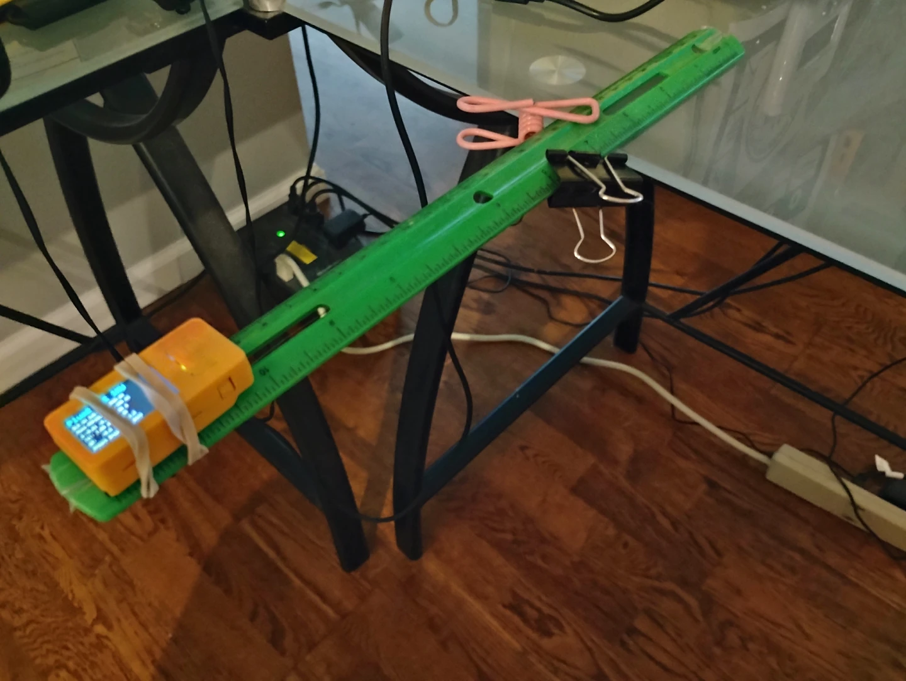
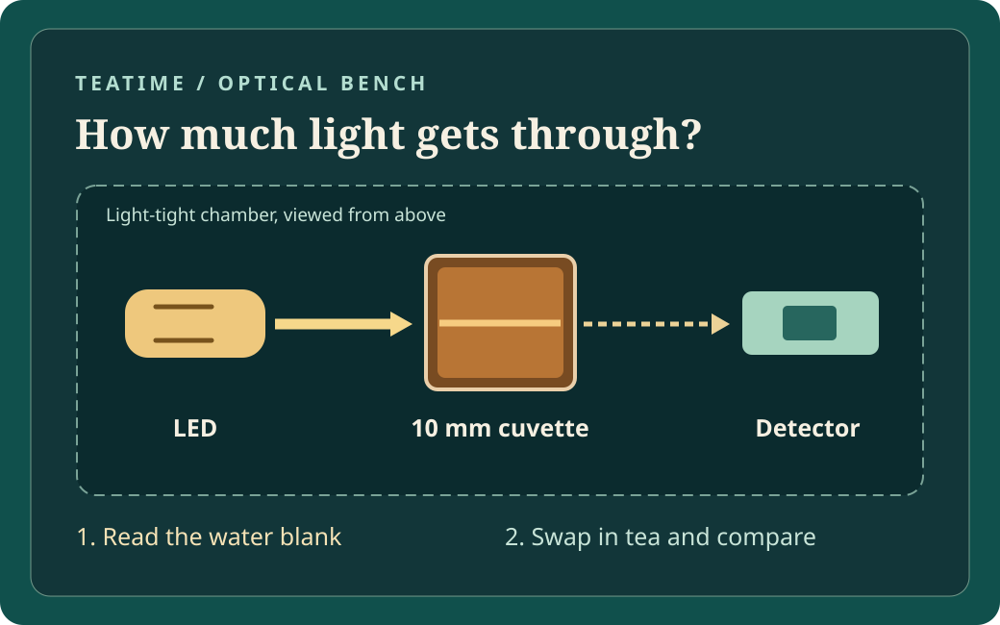

01 · Experiments & Teaching
Experience before equation
Ordinary phenomena first—rulers, cups of tea, candles, rocks, and water clocks—so equations are earned through real measurements.
RANDALL YOUNG · HOW MUCH? ENOUGH?
Randall Young’s public working archive of experiments, instruments, research papers, and the ideas that connect them.
How much? Enough? Measure what happened, then decide whether it was enough for the purpose—whether plucking a ruler, timing a hallway walk, building a wireless sensor, or comparing computer and biological architectures.
01 · Experiments & Teaching
Ordinary phenomena first—rulers, cups of tea, candles, rocks, and water clocks—so equations are earned through real measurements.
02 · Instruments & Machines
Low-cost wireless sensors, browser dashboards, bargain-bin robots, and visible computers built to expose how measurements travel.
03 · Movement & Independence
Marked hallway trials, step-detector validation, and fair physical-workload testing that separate effort, motion, and heart-rate response.
04 · Research & Scholarship
Can function endure as implementation changes? Three working manuscripts, computational tests, and a hands-on catalase open lab.
Flagship bench activity · Experience before equation
Pluck a ruler at the edge of a table. Follow the original bench experiment from a Bluetooth trace to a model you can test yourself.

Research & scholarship · Three papers + open lab
Follow one question from the DEC PDP-8 to peroxide-managing enzymes, modern parallel architectures, and accountable AI-assisted science.


Movement · Sensor test
SQM+ Hallway ObservatoryEleven meters, a stopwatch, and a step detector under test.
Hardware · Dashboards
Virtual InstrumentsFive wireless builds and the dashboards that make them usable.
Bench lab · Physical calculus
Galileo’s Water ClockWeigh water, infer elapsed time, and test the clock on a ramp.
Optics lab · Calibration
TeaTimeUse light to estimate the strength of an unknown tea dilution.Across different domains, the same working principles return. Follow an idea sideways, inspect project maturity, or search the full public codebase.
33 durable principles and designs that recur across experiments, instruments, and research.
What was built, what is still under test, and how the nine project families fit together.
Filter and search all 89 public GitHub repositories, including earlier versions and forks.